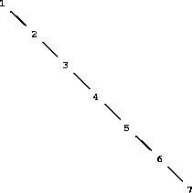

All the compound data objects we have used so far were constructed ultimately from numbers. In this section we extend the representational capability of our language by introducing the ability to work with arbitrary symbols as data.
If we can form compound data using symbols, we can have lists such as
(a b c d)
(23 45 17)
((Norah 12) (Molly 9) (Anna 7) (Lauren 6) (Charlotte 4))
Lists containing symbols can look just like the expressions of our language:
(* (+ 23 45) (+ x 9))
(define (fact n) (if (= n 1) 1 (* n (fact (- n 1)))))
In order to manipulate symbols we need a new element in our language: the ability to quote a data object. Suppose we want to construct the list (a b). We can't accomplish this with (list a b), because this expression constructs a list of the values of a and b rather than the symbols themselves. This issue is well known in the context of natural languages, where words and sentences may be regarded either as semantic entities or as character strings (syntactic entities). The common practice in natural languages is to use quotation marks to indicate that a word or a sentence is to be treated literally as a string of characters. For instance, the first letter of “John” is clearly “J.” If we tell somebody “say your name aloud,” we expect to hear that person's name. However, if we tell somebody “say `your name' aloud,” we expect to hear the words “your name.” Note that we are forced to nest quotation marks to describe what somebody else might say.32
We can follow this same practice to identify lists and symbols that are to be treated as data objects rather than as expressions to be evaluated. However, our format for quoting differs from that of natural languages in that we place a quotation mark (traditionally, the single quote symbol ') only at the beginning of the object to be quoted. We can get away with this in Scheme syntax because we rely on blanks and parentheses to delimit objects. Thus, the meaning of the single quote character is to quote the next object.33
Now we can distinguish between symbols and their values:
(define a 1)
(define b 2)
(list a b)
(1 2)
(list 'a 'b)
(a b)
(list 'a b)
(a 2)
Quotation also allows us to type in compound objects, using the conventional printed representation for lists:34
(car '(a b c))
a
(cdr '(a b c))
(b c)
In keeping with this, we can obtain the empty list by evaluating '(), and thus dispense with the variable nil.
One additional primitive used in manipulating symbols is eq?, which takes two symbols as arguments and tests whether they are the same.35 Using eq?, we can implement a useful procedure called memq. This takes two arguments, a symbol and a list. If the symbol is not contained in the list (i.e., is not eq? to any item in the list), then memq returns false. Otherwise, it returns the sublist of the list beginning with the first occurrence of the symbol:
(define (memq item x)
(cond ((null? x) false)
((eq? item (car x)) x)
(else (memq item (cdr x)))))
For example, the value of
(memq 'apple '(pear banana prune))
is false, whereas the value of
(memq 'apple '(x (apple sauce) y apple pear))
is (apple pear).
Exercise 2.53. What would the interpreter print in response to evaluating each of the following expressions?
(list 'a 'b 'c)
(list (list 'george))
(cdr '((x1 x2) (y1 y2)))
(cadr '((x1 x2) (y1 y2)))
(pair? (car '(a short list)))
(memq 'red '((red shoes) (blue socks)))
(memq 'red '(red shoes blue socks))
Exercise 2.54. Two lists are said to be equal? if they contain equal elements arranged in the same order. For example,
(equal? '(this is a list) '(this is a list))
is true, but
(equal? '(this is a list) '(this (is a) list))
is false. To be more precise, we can define equal? recursively in terms of the basic eq? equality of symbols by saying that a and b are equal? if they are both symbols and the symbols are eq?, or if they are both lists such that (car a) is equal? to (car b) and (cdr a) is equal? to (cdr b). Using this idea, implement equal? as a procedure.36
Exercise 2.55. Eva Lu Ator types to the interpreter the expression
(car ”abracadabra)
To her surprise, the interpreter prints back quote. Explain.
As an illustration of symbol manipulation and a further illustration of data abstraction, consider the design of a procedure that performs symbolic differentiation of algebraic expressions. We would like the procedure to take as arguments an algebraic expression and a variable and to return the derivative of the expression with respect to the variable. For example, if the arguments to the procedure are ax2 + bx + c and x, the procedure should return 2ax + b. Symbolic differentiation is of special historical significance in Lisp. It was one of the motivating examples behind the development of a computer language for symbol manipulation. Furthermore, it marked the beginning of the line of research that led to the development of powerful systems for symbolic mathematical work, which are currently being used by a growing number of applied mathematicians and physicists.
In developing the symbolic-differentiation program, we will follow the same strategy of data abstraction that we followed in developing the rational-number system of section 2.1.1. That is, we will first define a differentiation algorithm that operates on abstract objects such as “sums,” “products,” and “variables” without worrying about how these are to be represented. Only afterward will we address the representation problem.
In order to keep things simple, we will consider a very simple symbolic-differentiation program that handles expressions that are built up using only the operations of addition and multiplication with two arguments. Differentiation of any such expression can be carried out by applying the following reduction rules:


Observe that the latter two rules are recursive in nature. That is, to obtain the derivative of a sum we first find the derivatives of the terms and add them. Each of the terms may in turn be an expression that needs to be decomposed. Decomposing into smaller and smaller pieces will eventually produce pieces that are either constants or variables, whose derivatives will be either 0 or 1.
To embody these rules in a procedure we indulge in a little wishful thinking, as we did in designing the rational-number implementation. If we had a means for representing algebraic expressions, we should be able to tell whether an expression is a sum, a product, a constant, or a variable. We should be able to extract the parts of an expression. For a sum, for example we want to be able to extract the addend (first term) and the augend (second term). We should also be able to construct expressions from parts. Let us assume that we already have procedures to implement the following selectors, constructors, and predicates:
| (variable? e) | Is e a variable? |
| (same-variable? v1 v2) | Are v1 and v2 the same variable? |
(sum? e) | Is e a sum? |
| (addend e) | Addend of the sum e. |
| (augend e) | Augend of the sum e. |
| (make-sum a1 a2) | Construct the sum of a1 and a2. |
(product? e) | Is e a product? |
| (multiplier e) | Multiplier of the product e. |
| (multiplicand e) | Multiplicand of the product e. |
| (make-product m1 m2) | Construct the product of m1 and m2. |
(define (deriv exp var)
(cond ((number? exp) 0)
((variable? exp)
(if (same-variable? exp var) 1 0))
((sum? exp)
(make-sum (deriv (addend exp) var)
(deriv (augend exp) var)))
((product? exp)
(make-sum
(make-product (multiplier exp)
(deriv (multiplicand exp) var))
(make-product (deriv (multiplier exp) var)
(multiplicand exp))))
(else
(error "unknown expression type -- DERIV" exp))))
This deriv procedure incorporates the complete differentiation algorithm. Since it is expressed in terms of abstract data, it will work no matter how we choose to represent algebraic expressions, as long as we design a proper set of selectors and constructors. This is the issue we must address next.
We can imagine many ways to use list structure to represent algebraic expressions. For example, we could use lists of symbols that mirror the usual algebraic notation, representing ax + b as the list (a * x + b). However, one especially straightforward choice is to use the same parenthesized prefix notation that Lisp uses for combinations; that is, to represent ax + b as (+ (* a x) b). Then our data representation for the differentiation problem is as follows:
(define (variable? x) (symbol? x))
(define (same-variable? v1 v2)
(and (variable? v1) (variable? v2) (eq? v1 v2)))
(define (make-sum a1 a2) (list '+ a1 a2))
(define (make-product m1 m2) (list '* m1 m2))
(define (sum? x)
(and (pair? x) (eq? (car x) '+)))
(define (product? x)
(and (pair? x) (eq? (car x) '*)))
(define (multiplier p) (cadr p))
(define (multiplicand p) (caddr p))
Thus, we need only combine these with the algorithm as embodied by deriv in order to have a working symbolic-differentiation program. Let us look at some examples of its behavior:
(deriv '(+ x 3) 'x)
(+ 1 0)
(deriv '(* x y) 'x)
(+ (* x 0) (* 1 y))
(deriv '(* (* x y) (+ x 3)) 'x)
(+ (* (* x y) (+ 1 0))
(* (+ (* x 0) (* 1 y))
(+ x 3)))
The program produces answers that are correct; however, they are unsimplified. It is true that

but we would like the program to know that x · 0 = 0, 1 · y = y, and 0 + y = y. The answer for the second example should have been simply y. As the third example shows, this becomes a serious issue when the expressions are complex.
Our difficulty is much like the one we encountered with the rational-number implementation: we haven't reduced answers to simplest form. To accomplish the rational-number reduction, we needed to change only the constructors and the selectors of the implementation. We can adopt a similar strategy here. We won't change deriv at all. Instead, we will change make-sum so that if both summands are numbers, make-sum will add them and return their sum. Also, if one of the summands is 0, then make-sum will return the other summand.
(define (make-sum a1 a2)
(cond ((=number? a1 0) a2)
((=number? a2 0) a1)
((and (number? a1) (number? a2)) (+ a1 a2))
(else (list '+ a1 a2))))
This uses the procedure =number?, which checks whether an expression is equal to a given number:
(define (=number? exp num)
(and (number? exp) (= exp num)))
Similarly, we will change make-product to build in the rules that 0 times anything is 0 and 1 times anything is the thing itself:
(define (make-product m1 m2)
(cond ((or (=number? m1 0) (=number? m2 0)) 0)
((=number? m1 1) m2)
((=number? m2 1) m1)
((and (number? m1) (number? m2)) (* m1 m2))
(else (list '* m1 m2))))
Here is how this version works on our three examples:
(deriv '(+ x 3) 'x)
1
(deriv '(* x y) 'x)
y
(deriv '(* (* x y) (+ x 3)) 'x)
(+ (* x y) (* y (+ x 3)))
Although this is quite an improvement, the third example shows that there is still a long way to go before we get a program that puts expressions into a form that we might agree is “simplest.” The problem of algebraic simplification is complex because, among other reasons, a form that may be simplest for one purpose may not be for another.
Exercise 2.56. Show how to extend the basic differentiator to handle more kinds of expressions. For instance, implement the differentiation rule

by adding a new clause to the deriv program and defining appropriate procedures exponentiation?, base, exponent, and make-exponentiation. (You may use the symbol ** to denote exponentiation.) Build in the rules that anything raised to the power 0 is 1 and anything raised to the power 1 is the thing itself.
Exercise 2.57. Extend the differentiation program to handle sums and products of arbitrary numbers of (two or more) terms. Then the last example above could be expressed as
(deriv '(* x y (+ x 3)) 'x)
Try to do this by changing only the representation for sums and products, without changing the deriv procedure at all. For example, the addend of a sum would be the first term, and the augend would be the sum of the rest of the terms.
Exercise 2.58. Suppose we want to modify the differentiation program so that it works with ordinary mathematical notation, in which + and * are infix rather than prefix operators. Since the differentiation program is defined in terms of abstract data, we can modify it to work with different representations of expressions solely by changing the predicates, selectors, and constructors that define the representation of the algebraic expressions on which the differentiator is to operate.
a. Show how to do this in order to differentiate algebraic expressions presented in infix form, such as (x + (3 * (x + (y + 2)))). To simplify the task, assume that + and * always take two arguments and that expressions are fully parenthesized.
b. The problem becomes substantially harder if we allow standard algebraic notation, such as (x + 3 * (x + y + 2)), which drops unnecessary parentheses and assumes that multiplication is done before addition. Can you design appropriate predicates, selectors, and constructors for this notation such that our derivative program still works?
In the previous examples we built representations for two kinds of compound data objects: rational numbers and algebraic expressions. In one of these examples we had the choice of simplifying (reducing) the expressions at either construction time or selection time, but other than that the choice of a representation for these structures in terms of lists was straightforward. When we turn to the representation of sets, the choice of a representation is not so obvious. Indeed, there are a number of possible representations, and they differ significantly from one another in several ways.
Informally, a set is simply a collection of distinct objects. To give a more precise definition we can employ the method of data abstraction. That is, we define “set” by specifying the operations that are to be used on sets. These are union-set, intersection-set, element-of-set?, and adjoin-set. Element-of-set? is a predicate that determines whether a given element is a member of a set. Adjoin-set takes an object and a set as arguments and returns a set that contains the elements of the original set and also the adjoined element. Union-set computes the union of two sets, which is the set containing each element that appears in either argument. Intersection-set computes the intersection of two sets, which is the set containing only elements that appear in both arguments. From the viewpoint of data abstraction, we are free to design any representation that implements these operations in a way consistent with the interpretations given above.37
One way to represent a set is as a list of its elements in which no element appears more than once. The empty set is represented by the empty list. In this representation, element-of-set? is similar to the procedure memq of section 2.3.1. It uses equal? instead of eq? so that the set elements need not be symbols:
(define (element-of-set? x set)
(cond ((null? set) false)
((equal? x (car set)) true)
(else (element-of-set? x (cdr set)))))
Using this, we can write adjoin-set. If the object to be adjoined is already in the set, we just return the set. Otherwise, we use cons to add the object to the list that represents the set:
(define (adjoin-set x set)
(if (element-of-set? x set)
set
(cons x set)))
For intersection-set we can use a recursive strategy. If we know how to form the intersection of set2 and the cdr of set1, we only need to decide whether to include the car of set1 in this. But this depends on whether (car set1) is also in set2. Here is the resulting procedure:
(define (intersection-set set1 set2)
(cond ((or (null? set1) (null? set2)) '())
((element-of-set? (car set1) set2)
(cons (car set1)
(intersection-set (cdr set1) set2)))
(else (intersection-set (cdr set1) set2))))
In designing a representation, one of the issues we should be concerned with is efficiency. Consider the number of steps required by our set operations. Since they all use element-of-set?, the speed of this operation has a major impact on the efficiency of the set implementation as a whole. Now, in order to check whether an object is a member of a set, element-of-set? may have to scan the entire set. (In the worst case, the object turns out not to be in the set.) Hence, if the set has n elements, element-of-set? might take up to n steps. Thus, the number of steps required grows as θ(n). The number of steps required by adjoin-set, which uses this operation, also grows as θ(n). For intersection-set, which does an element-of-set? check for each element of set1, the number of steps required grows as the product of the sizes of the sets involved, or θ(n2) for two sets of size n. The same will be true of union-set.
Exercise 2.59. Implement the union-set operation for the unordered-list representation of sets.
Exercise 2.60. We specified that a set would be represented as a list with no duplicates. Now suppose we allow duplicates. For instance, the set {1,2,3} could be represented as the list (2 3 2 1 3 2 2). Design procedures element-of-set?, adjoin-set, union-set, and intersection-set that operate on this representation. How does the efficiency of each compare with the corresponding procedure for the non-duplicate representation? Are there applications for which you would use this representation in preference to the non-duplicate one?
One way to speed up our set operations is to change the representation so that the set elements are listed in increasing order. To do this, we need some way to compare two objects so that we can say which is bigger. For example, we could compare symbols lexicographically, or we could agree on some method for assigning a unique number to an object and then compare the elements by comparing the corresponding numbers. To keep our discussion simple, we will consider only the case where the set elements are numbers, so that we can compare elements using > and <. We will represent a set of numbers by listing its elements in increasing order. Whereas our first representation above allowed us to represent the set {1,3,6,10} by listing the elements in any order, our new representation allows only the list (1 3 6 10).
One advantage of ordering shows up in element-of-set?: In checking for the presence of an item, we no longer have to scan the entire set. If we reach a set element that is larger than the item we are looking for, then we know that the item is not in the set:
(define (element-of-set? x set)
(cond ((null? set) false)
((= x (car set)) true)
((< x (car set)) false)
(else (element-of-set? x (cdr set)))))
How many steps does this save? In the worst case, the item we are looking for may be the largest one in the set, so the number of steps is the same as for the unordered representation. On the other hand, if we search for items of many different sizes we can expect that sometimes we will be able to stop searching at a point near the beginning of the list and that other times we will still need to examine most of the list. On the average we should expect to have to examine about half of the items in the set. Thus, the average number of steps required will be about n/2. This is still θ(n) growth, but it does save us, on the average, a factor of 2 in number of steps over the previous implementation.
We obtain a more impressive speedup with intersection-set. In the unordered representation this operation required θ(n2) steps, because we performed a complete scan of set2 for each element of set1. But with the ordered representation, we can use a more clever method. Begin by comparing the initial elements, x1 and x2, of the two sets. If x1 equals x2, then that gives an element of the intersection, and the rest of the intersection is the intersection of the cdrs of the two sets. Suppose, however, that x1 is less than x2. Since x2 is the smallest element in set2, we can immediately conclude that x1 cannot appear anywhere in set2 and hence is not in the intersection. Hence, the intersection is equal to the intersection of set2 with the cdr of set1. Similarly, if x2 is less than x1, then the intersection is given by the intersection of set1 with the cdr of set2. Here is the procedure:
(define (intersection-set set1 set2)
(if (or (null? set1) (null? set2))
'()
(let ((x1 (car set1)) (x2 (car set2)))
(cond ((= x1 x2)
(cons x1
(intersection-set (cdr set1)
(cdr set2))))
((< x1 x2)
(intersection-set (cdr set1) set2))
((< x2 x1)
(intersection-set set1 (cdr set2)))))))
To estimate the number of steps required by this process, observe that at each step we reduce the intersection problem to computing intersections of smaller sets – removing the first element from set1 or set2 or both. Thus, the number of steps required is at most the sum of the sizes of set1 and set2, rather than the product of the sizes as with the unordered representation. This is θ(n) growth rather than θ(n2) – a considerable speedup, even for sets of moderate size.
Exercise 2.61. Give an implementation of adjoin-set using the ordered representation. By analogy with element-of-set? show how to take advantage of the ordering to produce a procedure that requires on the average about half as many steps as with the unordered representation.
Exercise 2.62. Give a θ(n) implementation of union-set for sets represented as ordered lists.
We can do better than the ordered-list representation by arranging the set elements in the form of a tree. Each node of the tree holds one element of the set, called the “entry” at that node, and a link to each of two other (possibly empty) nodes. The “left” link points to elements smaller than the one at the node, and the “right” link to elements greater than the one at the node. Figure 2.16 shows some trees that represent the set {1,3,5,7,9,11}. The same set may be represented by a tree in a number of different ways. The only thing we require for a valid representation is that all elements in the left subtree be smaller than the node entry and that all elements in the right subtree be larger.
 |
The advantage of the tree representation is this: Suppose we want to check whether a number x is contained in a set. We begin by comparing x with the entry in the top node. If x is less than this, we know that we need only search the left subtree; if x is greater, we need only search the right subtree. Now, if the tree is “balanced,” each of these subtrees will be about half the size of the original. Thus, in one step we have reduced the problem of searching a tree of size n to searching a tree of size n/2. Since the size of the tree is halved at each step, we should expect that the number of steps needed to search a tree of size n grows as θ(log n).38 For large sets, this will be a significant speedup over the previous representations.
We can represent trees by using lists. Each node will be a list of three items: the entry at the node, the left subtree, and the right subtree. A left or a right subtree of the empty list will indicate that there is no subtree connected there. We can describe this representation by the following procedures:39
(define (entry tree) (car tree))
(define (left-branch tree) (cadr tree))
(define (right-branch tree) (caddr tree))
(define (make-tree entry left right)
(list entry left right))
Now we can write the element-of-set? procedure using the strategy described above:
(define (element-of-set? x set)
(cond ((null? set) false)
((= x (entry set)) true)
((< x (entry set))
(element-of-set? x (left-branch set)))
((> x (entry set))
(element-of-set? x (right-branch set)))))
Adjoining an item to a set is implemented similarly and also requires θ(log n) steps. To adjoin an item x, we compare x with the node entry to determine whether x should be added to the right or to the left branch, and having adjoined x to the appropriate branch we piece this newly constructed branch together with the original entry and the other branch. If x is equal to the entry, we just return the node. If we are asked to adjoin x to an empty tree, we generate a tree that has x as the entry and empty right and left branches. Here is the procedure:
(define (adjoin-set x set)
(cond ((null? set) (make-tree x '() '()))
((= x (entry set)) set)
((< x (entry set))
(make-tree (entry set)
(adjoin-set x (left-branch set))
(right-branch set)))
((> x (entry set))
(make-tree (entry set)
(left-branch set)
(adjoin-set x (right-branch set))))))
The above claim that searching the tree can be performed in a logarithmic number of steps rests on the assumption that the tree is “balanced,” i.e., that the left and the right subtree of every tree have approximately the same number of elements, so that each subtree contains about half the elements of its parent. But how can we be certain that the trees we construct will be balanced? Even if we start with a balanced tree, adding elements with adjoin-set may produce an unbalanced result. Since the position of a newly adjoined element depends on how the element compares with the items already in the set, we can expect that if we add elements “randomly” the tree will tend to be balanced on the average. But this is not a guarantee. For example, if we start with an empty set and adjoin the numbers 1 through 7 in sequence we end up with the highly unbalanced tree shown in figure 2.17. In this tree all the left subtrees are empty, so it has no advantage over a simple ordered list. One way to solve this problem is to define an operation that transforms an arbitrary tree into a balanced tree with the same elements. Then we can perform this transformation after every few adjoin-set operations to keep our set in balance. There are also other ways to solve this problem, most of which involve designing new data structures for which searching and insertion both can be done in θ(log n) steps.40
|  |
Exercise 2.63. Each of the following two procedures converts a binary tree to a list.
(define (tree->list-1 tree)
(if (null? tree)
'()
(append (tree->list-1 (left-branch tree))
(cons (entry tree)
(tree->list-1 (right-branch tree))))))
(define (tree->list-2 tree)
(define (copy-to-list tree result-list)
(if (null? tree)
result-list
(copy-to-list (left-branch tree)
(cons (entry tree)
(copy-to-list (right-branch tree)
result-list)))))
(copy-to-list tree '()))
a. Do the two procedures produce the same result for every tree? If not, how do the results differ? What lists do the two procedures produce for the trees in figure 2.16?
b. Do the two procedures have the same order of growth in the number of steps required to convert a balanced tree with n elements to a list? If not, which one grows more slowly?
Exercise 2.64. The following procedure list->tree converts an ordered list to a balanced binary tree. The helper procedure partial-tree takes as arguments an integer n and list of at least n elements and constructs a balanced tree containing the first n elements of the list. The result returned by partial-tree is a pair (formed with cons) whose car is the constructed tree and whose cdr is the list of elements not included in the tree.
(define (list->tree elements)
(car (partial-tree elements (length elements))))
(define (partial-tree elts n)
(if (= n 0)
(cons '() elts)
(let ((left-size (quotient (- n 1) 2)))
(let ((left-result (partial-tree elts left-size)))
(let ((left-tree (car left-result))
(non-left-elts (cdr left-result))
(right-size (- n (+ left-size 1))))
(let ((this-entry (car non-left-elts))
(right-result (partial-tree (cdr non-left-elts)
right-size)))
(let ((right-tree (car right-result))
(remaining-elts (cdr right-result)))
(cons (make-tree this-entry left-tree right-tree)
remaining-elts))))))))
a. Write a short paragraph explaining as clearly as you can how partial-tree works. Draw the tree produced by list->tree for the list (1 3 5 7 9 11).
b. What is the order of growth in the number of steps required by list->tree to convert a list of n elements?
Exercise 2.65. Use the results of exercises 2.63 and 2.64 to give θ(n) implementations of union-set and intersection-set for sets implemented as (balanced) binary trees.41
We have examined options for using lists to represent sets and have seen how the choice of representation for a data object can have a large impact on the performance of the programs that use the data. Another reason for concentrating on sets is that the techniques discussed here appear again and again in applications involving information retrieval.
Consider a data base containing a large number of individual records, such as the personnel files for a company or the transactions in an accounting system. A typical data-management system spends a large amount of time accessing or modifying the data in the records and therefore requires an efficient method for accessing records. This is done by identifying a part of each record to serve as an identifying key. A key can be anything that uniquely identifies the record. For a personnel file, it might be an employee's ID number. For an accounting system, it might be a transaction number. Whatever the key is, when we define the record as a data structure we should include a key selector procedure that retrieves the key associated with a given record.
Now we represent the data base as a set of records. To locate the record with a given key we use a procedure lookup, which takes as arguments a key and a data base and which returns the record that has that key, or false if there is no such record. Lookup is implemented in almost the same way as element-of-set?. For example, if the set of records is implemented as an unordered list, we could use
(define (lookup given-key set-of-records)
(cond ((null? set-of-records) false)
((equal? given-key (key (car set-of-records)))
(car set-of-records))
(else (lookup given-key (cdr set-of-records)))))
Of course, there are better ways to represent large sets than as unordered lists. Information-retrieval systems in which records have to be “randomly accessed” are typically implemented by a tree-based method, such as the binary-tree representation discussed previously. In designing such a system the methodology of data abstraction can be a great help. The designer can create an initial implementation using a simple, straightforward representation such as unordered lists. This will be unsuitable for the eventual system, but it can be useful in providing a “quick and dirty” data base with which to test the rest of the system. Later on, the data representation can be modified to be more sophisticated. If the data base is accessed in terms of abstract selectors and constructors, this change in representation will not require any changes to the rest of the system.
Exercise 2.66. Implement the lookup procedure for the case where the set of records is structured as a binary tree, ordered by the numerical values of the keys.
This section provides practice in the use of list structure and data abstraction to manipulate sets and trees. The application is to methods for representing data as sequences of ones and zeros (bits). For example, the ASCII standard code used to represent text in computers encodes each character as a sequence of seven bits. Using seven bits allows us to distinguish 27, or 128, possible different characters. In general, if we want to distinguish n different symbols, we will need to use log2n bits per symbol. If all our messages are made up of the eight symbols A, B, C, D, E, F, G, and H, we can choose a code with three bits per character, for example
| A 000 | C 010 | E 100 | G 110 |
| B 001 | D 011 | F 101 | H 111 |
BACADAEAFABBAAAGAH
is encoded as the string of 54 bits
001000010000011000100000101000001001000000000110000111
Codes such as ASCII and the A-through-H code above are known as fixed-length codes, because they represent each symbol in the message with the same number of bits. It is sometimes advantageous to use variable-length codes, in which different symbols may be represented by different numbers of bits. For example, Morse code does not use the same number of dots and dashes for each letter of the alphabet. In particular, E, the most frequent letter, is represented by a single dot. In general, if our messages are such that some symbols appear very frequently and some very rarely, we can encode data more efficiently (i.e., using fewer bits per message) if we assign shorter codes to the frequent symbols. Consider the following alternative code for the letters A through H:
| A 0 | C 1010 | E 1100 | G 1110 |
| B 100 | D 1011 | F 1101 | H 1111 |
100010100101101100011010100100000111001111
This string contains 42 bits, so it saves more than 20% in space in comparison with the fixed-length code shown above.
One of the difficulties of using a variable-length code is knowing when you have reached the end of a symbol in reading a sequence of zeros and ones. Morse code solves this problem by using a special separator code (in this case, a pause) after the sequence of dots and dashes for each letter. Another solution is to design the code in such a way that no complete code for any symbol is the beginning (or prefix) of the code for another symbol. Such a code is called a prefix code. In the example above, A is encoded by 0 and B is encoded by 100, so no other symbol can have a code that begins with 0 or with 100.
In general, we can attain significant savings if we use variable-length prefix codes that take advantage of the relative frequencies of the symbols in the messages to be encoded. One particular scheme for doing this is called the Huffman encoding method, after its discoverer, David Huffman. A Huffman code can be represented as a binary tree whose leaves are the symbols that are encoded. At each non-leaf node of the tree there is a set containing all the symbols in the leaves that lie below the node. In addition, each symbol at a leaf is assigned a weight (which is its relative frequency), and each non-leaf node contains a weight that is the sum of all the weights of the leaves lying below it. The weights are not used in the encoding or the decoding process. We will see below how they are used to help construct the tree.
 |
Figure 2.18 shows the Huffman tree for the A-through-H code given above. The weights at the leaves indicate that the tree was designed for messages in which A appears with relative frequency 8, B with relative frequency 3, and the other letters each with relative frequency 1.
Given a Huffman tree, we can find the encoding of any symbol by starting at the root and moving down until we reach the leaf that holds the symbol. Each time we move down a left branch we add a 0 to the code, and each time we move down a right branch we add a 1. (We decide which branch to follow by testing to see which branch either is the leaf node for the symbol or contains the symbol in its set.) For example, starting from the root of the tree in figure 2.18, we arrive at the leaf for D by following a right branch, then a left branch, then a right branch, then a right branch; hence, the code for D is 1011.
To decode a bit sequence using a Huffman tree, we begin at the root and use the successive zeros and ones of the bit sequence to determine whether to move down the left or the right branch. Each time we come to a leaf, we have generated a new symbol in the message, at which point we start over from the root of the tree to find the next symbol. For example, suppose we are given the tree above and the sequence 10001010. Starting at the root, we move down the right branch, (since the first bit of the string is 1), then down the left branch (since the second bit is 0), then down the left branch (since the third bit is also 0). This brings us to the leaf for B, so the first symbol of the decoded message is B. Now we start again at the root, and we make a left move because the next bit in the string is 0. This brings us to the leaf for A. Then we start again at the root with the rest of the string 1010, so we move right, left, right, left and reach C. Thus, the entire message is BAC.
Given an “alphabet” of symbols and their relative frequencies, how do we construct the “best” code? (In other words, which tree will encode messages with the fewest bits?) Huffman gave an algorithm for doing this and showed that the resulting code is indeed the best variable-length code for messages where the relative frequency of the symbols matches the frequencies with which the code was constructed. We will not prove this optimality of Huffman codes here, but we will show how Huffman trees are constructed.42
The algorithm for generating a Huffman tree is very simple. The idea is to arrange the tree so that the symbols with the lowest frequency appear farthest away from the root. Begin with the set of leaf nodes, containing symbols and their frequencies, as determined by the initial data from which the code is to be constructed. Now find two leaves with the lowest weights and merge them to produce a node that has these two nodes as its left and right branches. The weight of the new node is the sum of the two weights. Remove the two leaves from the original set and replace them by this new node. Now continue this process. At each step, merge two nodes with the smallest weights, removing them from the set and replacing them with a node that has these two as its left and right branches. The process stops when there is only one node left, which is the root of the entire tree. Here is how the Huffman tree of figure 2.18 was generated:
| Initial leaves | {(A 8) (B 3) (C 1) (D 1) (E 1) (F 1) (G 1) (H 1)} |
Merge | {(A 8) (B 3) ({C D} 2) (E 1) (F 1) (G 1) (H 1)} |
Merge | {(A 8) (B 3) ({C D} 2) ({E F} 2) (G 1) (H 1)} |
Merge | {(A 8) (B 3) ({C D} 2) ({E F} 2) ({G H} 2)} |
Merge | {(A 8) (B 3) ({C D} 2) ({E F G H} 4)} |
Merge | {(A 8) ({B C D} 5) ({E F G H} 4)} |
Merge | {(A 8) ({B C D E F G H} 9)} |
Final merge | {({A B C D E F G H} 17)} |
In the exercises below we will work with a system that uses Huffman trees to encode and decode messages and generates Huffman trees according to the algorithm outlined above. We will begin by discussing how trees are represented.
Leaves of the tree are represented by a list consisting of the symbol leaf, the symbol at the leaf, and the weight:
(define (make-leaf symbol weight)
(list 'leaf symbol weight))
(define (leaf? object)
(eq? (car object) 'leaf))
(define (symbol-leaf x) (cadr x))
(define (weight-leaf x) (caddr x))
A general tree will be a list of a left branch, a right branch, a set of symbols, and a weight. The set of symbols will be simply a list of the symbols, rather than some more sophisticated set representation. When we make a tree by merging two nodes, we obtain the weight of the tree as the sum of the weights of the nodes, and the set of symbols as the union of the sets of symbols for the nodes. Since our symbol sets are represented as lists, we can form the union by using the append procedure we defined in section 2.2.1:
(define (make-code-tree left right)
(list left
right
(append (symbols left) (symbols right))
(+ (weight left) (weight right))))
If we make a tree in this way, we have the following selectors:
(define (left-branch tree) (car tree))
(define (right-branch tree) (cadr tree))
(define (symbols tree)
(if (leaf? tree)
(list (symbol-leaf tree))
(caddr tree)))
(define (weight tree)
(if (leaf? tree)
(weight-leaf tree)
(cadddr tree)))
The procedures symbols and weight must do something slightly different depending on whether they are called with a leaf or a general tree. These are simple examples of generic procedures (procedures that can handle more than one kind of data), which we will have much more to say about in sections 2.4 and 2.5.
The following procedure implements the decoding algorithm. It takes as arguments a list of zeros and ones, together with a Huffman tree.
(define (decode bits tree)
(define (decode-1 bits current-branch)
(if (null? bits)
'()
(let ((next-branch
(choose-branch (car bits) current-branch)))
(if (leaf? next-branch)
(cons (symbol-leaf next-branch)
(decode-1 (cdr bits) tree))
(decode-1 (cdr bits) next-branch)))))
(decode-1 bits tree))
(define (choose-branch bit branch)
(cond ((= bit 0) (left-branch branch))
((= bit 1) (right-branch branch))
(else (error "bad bit -- CHOOSE-BRANCH" bit))))
The procedure decode-1 takes two arguments: the list of remaining bits and the current position in the tree. It keeps moving “down” the tree, choosing a left or a right branch according to whether the next bit in the list is a zero or a one. (This is done with the procedure choose-branch.) When it reaches a leaf, it returns the symbol at that leaf as the next symbol in the message by consing it onto the result of decoding the rest of the message, starting at the root of the tree. Note the error check in the final clause of choose-branch, which complains if the procedure finds something other than a zero or a one in the input data.
In our representation of trees, each non-leaf node contains a set of symbols, which we have represented as a simple list. However, the tree-generating algorithm discussed above requires that we also work with sets of leaves and trees, successively merging the two smallest items. Since we will be required to repeatedly find the smallest item in a set, it is convenient to use an ordered representation for this kind of set.
We will represent a set of leaves and trees as a list of elements, arranged in increasing order of weight. The following adjoin-set procedure for constructing sets is similar to the one described in exercise 2.61; however, items are compared by their weights, and the element being added to the set is never already in it.
(define (adjoin-set x set)
(cond ((null? set) (list x))
((< (weight x) (weight (car set))) (cons x set))
(else (cons (car set)
(adjoin-set x (cdr set))))))
The following procedure takes a list of symbol-frequency pairs such as ((A 4) (B 2) (C 1) (D 1)) and constructs an initial ordered set of leaves, ready to be merged according to the Huffman algorithm:
(define (make-leaf-set pairs)
(if (null? pairs)
'()
(let ((pair (car pairs)))
(adjoin-set (make-leaf (car pair) ; symbol
(cadr pair)) ; frequency
(make-leaf-set (cdr pairs))))))
Exercise 2.67. Define an encoding tree and a sample message:
(define sample-tree
(make-code-tree (make-leaf 'A 4)
(make-code-tree
(make-leaf 'B 2)
(make-code-tree (make-leaf 'D 1)
(make-leaf 'C 1)))))
(define sample-message '(0 1 1 0 0 1 0 1 0 1 1 1 0))
Use the decode procedure to decode the message, and give the result.
Exercise 2.68. The encode procedure takes as arguments a message and a tree and produces the list of bits that gives the encoded message.
(define (encode message tree)
(if (null? message)
'()
(append (encode-symbol (car message) tree)
(encode (cdr message) tree))))
Encode-symbol is a procedure, which you must write, that returns the list of bits that encodes a given symbol according to a given tree. You should design encode-symbol so that it signals an error if the symbol is not in the tree at all. Test your procedure by encoding the result you obtained in exercise 2.67 with the sample tree and seeing whether it is the same as the original sample message.
Exercise 2.69. The following procedure takes as its argument a list of symbol-frequency pairs (where no symbol appears in more than one pair) and generates a Huffman encoding tree according to the Huffman algorithm.
(define (generate-huffman-tree pairs)
(successive-merge (make-leaf-set pairs)))
Make-leaf-set is the procedure given above that transforms the list of pairs into an ordered set of leaves. Successive-merge is the procedure you must write, using make-code-tree to successively merge the smallest-weight elements of the set until there is only one element left, which is the desired Huffman tree. (This procedure is slightly tricky, but not really complicated. If you find yourself designing a complex procedure, then you are almost certainly doing something wrong. You can take significant advantage of the fact that we are using an ordered set representation.)
Exercise 2.70. The following eight-symbol alphabet with associated relative frequencies was designed to efficiently encode the lyrics of 1950s rock songs. (Note that the “symbols” of an “alphabet” need not be individual letters.)
| A | 2 | NA | 16 |
| BOOM | 1 | SHA | 3 |
| GET | 2 | YIP | 9 |
| JOB | 2 | WAH | 1 |
Get a job
Sha na na na na na na na na
Get a job
Sha na na na na na na na na
Wah yip yip yip yip yip yip yip yip yip
Sha boom
How many bits are required for the encoding? What is the smallest number of bits that would be needed to encode this song if we used a fixed-length code for the eight-symbol alphabet?
Exercise 2.71. Suppose we have a Huffman tree for an alphabet of n symbols, and that the relative frequencies of the symbols are 1, 2, 4, ..., 2n-1. Sketch the tree for n=5; for n=10. In such a tree (for general n) how may bits are required to encode the most frequent symbol? the least frequent symbol?
Exercise 2.72. Consider the encoding procedure that you designed in exercise 2.68. What is the order of growth in the number of steps needed to encode a symbol? Be sure to include the number of steps needed to search the symbol list at each node encountered. To answer this question in general is difficult. Consider the special case where the relative frequencies of the n symbols are as described in exercise 2.71, and give the order of growth (as a function of n) of the number of steps needed to encode the most frequent and least frequent symbols in the alphabet.
32 Allowing quotation in a language wreaks havoc with the ability to reason about the language in simple terms, because it destroys the notion that equals can be substituted for equals. For example, three is one plus two, but the word “three” is not the phrase “one plus two.” Quotation is powerful because it gives us a way to build expressions that manipulate other expressions (as we will see when we write an interpreter in chapter 4). But allowing statements in a language that talk about other statements in that language makes it very difficult to maintain any coherent principle of what “equals can be substituted for equals” should mean. For example, if we know that the evening star is the morning star, then from the statement “the evening star is Venus” we can deduce “the morning star is Venus.” However, given that “John knows that the evening star is Venus” we cannot infer that “John knows that the morning star is Venus.”
33 The single quote is different from the double quote we have been using to enclose character strings to be printed. Whereas the single quote can be used to denote lists or symbols, the double quote is used only with character strings. In this book, the only use for character strings is as items to be printed.
34 Strictly, our use of the quotation mark violates the general rule that all compound expressions in our language should be delimited by parentheses and look like lists. We can recover this consistency by introducing a special form quote, which serves the same purpose as the quotation mark. Thus, we would type (quote a) instead of 'a, and we would type (quote (a b c)) instead of '(a b c). This is precisely how the interpreter works. The quotation mark is just a single-character abbreviation for wrapping the next complete expression with quote to form (quote <expression>). This is important because it maintains the principle that any expression seen by the interpreter can be manipulated as a data object. For instance, we could construct the expression (car '(a b c)), which is the same as (car (quote (a b c))), by evaluating (list 'car (list 'quote '(a b c))).
35 We can consider two symbols to be “the same” if they consist of the same characters in the same order. Such a definition skirts a deep issue that we are not yet ready to address: the meaning of “sameness” in a programming language. We will return to this in chapter 3 (section 3.1.3).
36 In practice, programmers use equal? to compare lists that contain numbers as well as symbols. Numbers are not considered to be symbols. The question of whether two numerically equal numbers (as tested by =) are also eq? is highly implementation-dependent. A better definition of equal? (such as the one that comes as a primitive in Scheme) would also stipulate that if a and b are both numbers, then a and b are equal? if they are numerically equal.
37 If we want to be more formal, we can specify “consistent with the interpretations given above” to mean that the operations satisfy a collection of rules such as these:
38 Halving the size of the problem at each step is the distinguishing characteristic of logarithmic growth, as we saw with the fast-exponentiation algorithm of section 1.2.4 and the half-interval search method of section 1.3.3.
39 We are representing sets in terms of trees, and trees in terms of lists – in effect, a data abstraction built upon a data abstraction. We can regard the procedures entry, left-branch, right-branch, and make-tree as a way of isolating the abstraction of a “binary tree” from the particular way we might wish to represent such a tree in terms of list structure.
40 Examples of such structures include B-trees and red-black trees. There is a large literature on data structures devoted to this problem. See Cormen, Leiserson, and Rivest 1990.
41 Exercises 2.63-2.65 are due to Paul Hilfinger.
42 See Hamming 1980 for a discussion of the mathematical properties of Huffman codes.